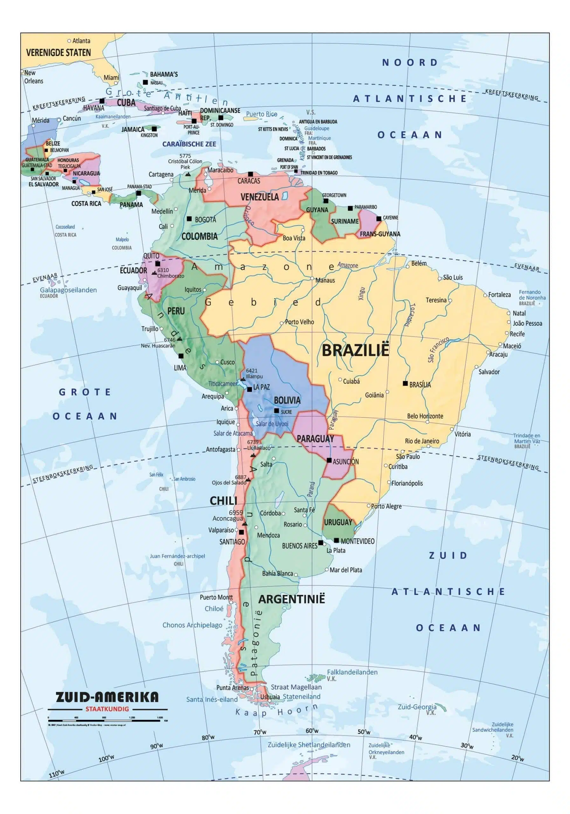

Kom alles te weten over de landen binnen Zuid-Amerika.
Er zijn in totaal 12 landen en drie overzeese gebiedsdelen, waarvan een op het vaste land. Het werelddeel bevat ongeveer 434 miljoen inwoners.
Bron tekstDe 12 landen zijn:
Het land met de meeste inwoners is Brazilië met ongeveer 200 miljoen inwoners.
Bron tekst  Bron foto